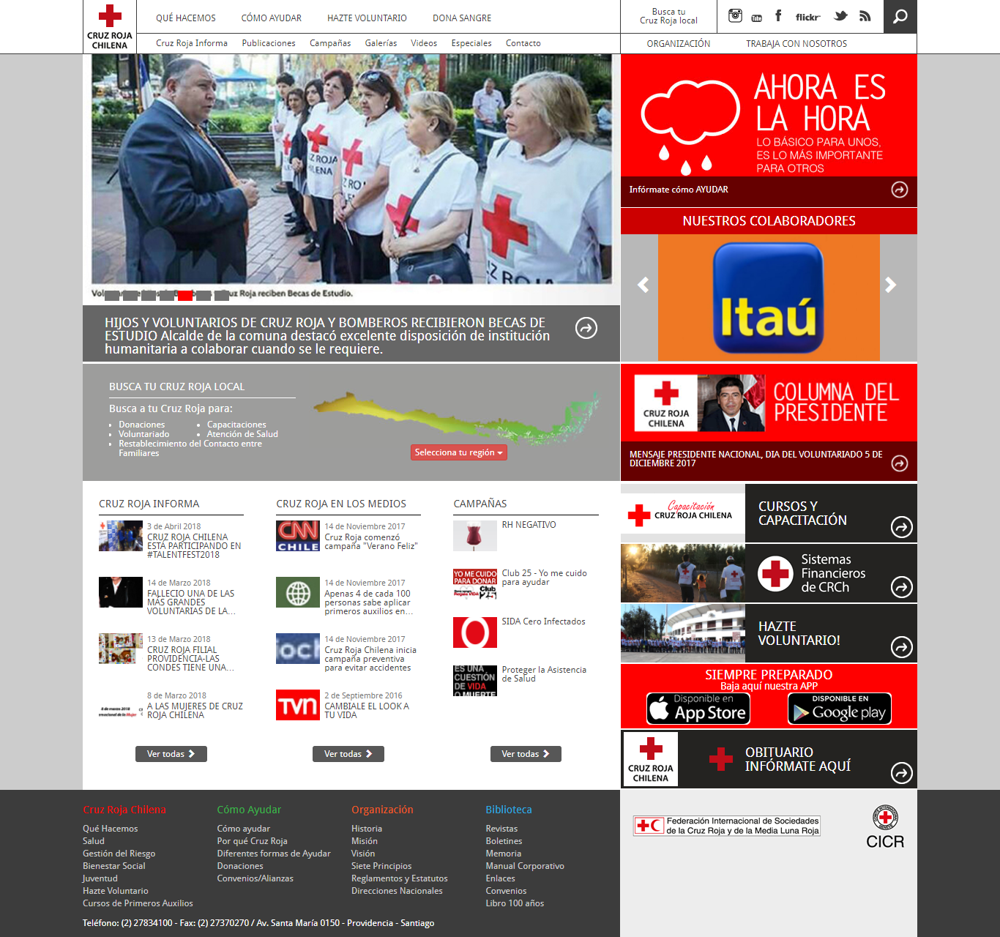

.PNG)
Proyecto

OBJETIVO: Rediseño de página web de la Cruz Roja e implementación de sistema virtual cognitivo
Se nos solicitó como equipo analizar y rediseñar la página actual de la Cruz Roja con el fin de reducir la cantidad de llamadas que realizan los usuarios a la sucursal con respecto a dudas que deberían ser respondidas en la misma página. Además se solicitó la implementación de un asistente virtual con el fín de resolver dudas que surgen en emergencias.
Para el proceso de investigación trabajamos bajo la metodología de Design Thinking en donde fue fundamental la participación tanto del del cliente como del área de desarrollo.

BENCHMARK
Realizamos un análisis comparativo de páginas de Cruz Roja a nivel internacional y en paralelo testeamos la página actual de Cruz Roja Chile junto con analizar la arquitectura de la información. Concluimos que la página actual chilena estaba sobrecargada de información, además la información no estaba al alcance inmediato, no hay información específica, con respecto a diseño visual la tipografía es pequeña, no hay contraste lo que ocasiona que algunos links parezcan deshabilitados y la jerarquía no está clara.
PÁGINA ACTUAL

Se realizó un mapa de contenido en donde se valida la sobre carga de información en ciertas secciones, lo difícil de llegar a la información, la repetición de algunas opciones y la jerarquía de contenidos no se respetaba.
ENTREVISTA CON EXPERTOS
La entrevista con expertos nos permitió definir la necesidad de ellos como clientes, la cual, es disminuir la cantidad de llamados que realizan los usuarios en situaciones de emergencias, es decir, que la página sea tan clara que los usuarios no tuviesen la necesidad de llamar.
ANÁLISIS / DEFINICIÓN
En conjunto con el equipo de desarrollo y los integrantes de la Cruz Roja realizamos el user persona y un mapa de empatía del usuario. Producto de esto logramos llegar a la problemática.
USER PERSONA
MAPA DE EMPATIA
PERSONALIDAD DE ASISTENTE VIRTUAL
Con respecto al asistente virtual, pudimos generar una personalidad que permitiera empatizar con el usuario, dándole dos características que son la confianza, por medio de una personalidad profesional y generar cercanía por medio de un lenguaje coloquial.
PROBLEMÁTICA
Las personas que quieren ser voluntarias a partir de un evento de emergencia, desconocen la información necesaria para poder inscribirse o de como poder ayudar (Voluntario desinformado).
PROPUESTA DE VALOR
- La página logra ser cercana e intuitiva, lo que hace disminuir las llamadas en episodios de emergencia.
- Contar con un asistente virtual cognitivo, que cuente con una personalidad enfocada en el usuario.
IDEACIÓN / DISEÑO
Gracias a la propuesta de valor, pudimos comenzar con los sketches, donde todas colaboramos con distintas ideas, respecto a las posibles soluciones de la web.
Una vez realizado los sketch decidimos, por medio de votación, seleccionar las soluciones más relevantes.
VALIDACIÓN / CONCLUSIÓN
Realizamos testeos de guerrilla en donde pudimos iterar el producto hasta llegar al MVP (Producto mínimo viable). Como conclusión tuvimos que reorganizar la arquitectura de la información, principalmente en relación a la jerarquía y el diseño visual. Los principales cambios fueron en relación a como entregar la información, conceptos confusos.
DESARROLLO DE ASISTENTE VIRTUAL COGNITOVO
Para poder desarrollar el proyecto de asistente virtual se utilizan otras tecnologías de IBM. Watson assistant para crear el flujo y contenido de los diálogos, Node-RED como herramienta de desarrollo que permite conectar la API de Watson Assistant con nuestra aplicación web, la que se interrumpe en la página como un iframe. La aplicación web fue desarrollada con Javascript y jQuery, ademas de bootstrap 4 como framework.
PARA VER EL CHATBOT HAZ CLICK ACÁ
EQUIPO
UX DESIGNER
- Macarena Araos
- Pabla Bazán
- Lía Cubillos
- Natalia Espinoza
- Angélica Órdenes
- Stephanie Rojo
FRONT-END DEVELOPERS
- Natalia Albornoz
- María José Barriga
- Andrea Díaz
- Cynthia Isla
- Nadia Morales
- Leticia Rodríguez
Proyecto realizado para Cruz Roja Chilena en conjunto de IBM